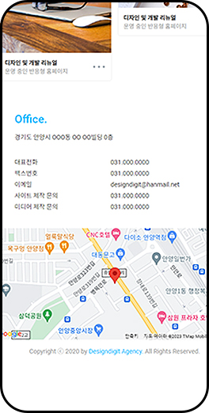
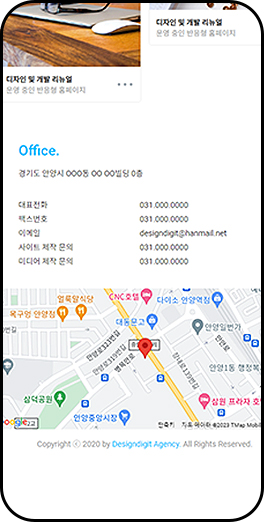

-
데일리
디지털 미디어고품질의 패션/뷰티
정보데일리 디지털 미디어
표현 필요 -
정보전달
직관적이지 못한 요소들로
인한 정보전달의 답답함 -
모바일 퍼스트
모바일 사용자의 증가로
인한 반응형 페이지 필요
-
신뢰성 있는 매체
단정한 블랙&화이트의 컬러와 사용자
의 편의성을 위한 구성을 사용하여
정보 미디어 매체의 필수요소인 신뢰
성을 표현했습니다. -
시원한 레이아웃
1600px의 넓은 바디영역으로 다양한
콘텐츠가 답답하지 않도록 했습니다.
홈페이지에 다양한 섬네일으로 각 카
테고리가 분류되어 페이지가 시원해
보이도록 했습니다. -
모바일 최적화
단정한 블랙&화이트의 컬러와 사용자
의 편의성을 위한 구성을 사용하여
정보 미디어 매체의 필수요소인 신뢰
성을 표현했습니다.


 
